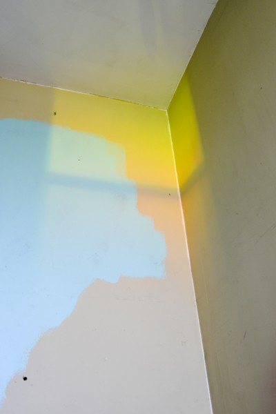
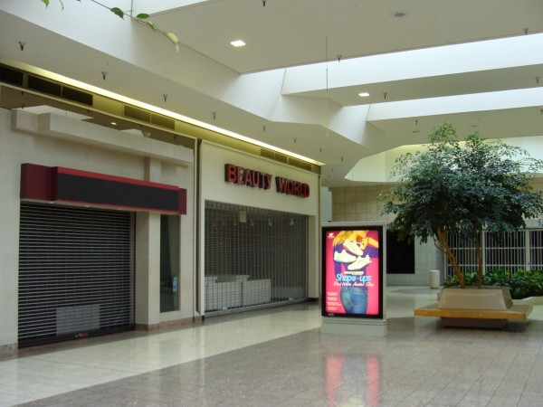

-
Selection No. 7
by Signe PIerce January 22, 2013
image by Dan Allegretto. courtesy of the artist.
1. Bobby Doherty. Matthew Leifheit. Dan AlegrettoThese guys, whose names I have just typed, are friends of mine, who also happen to be three of my favorite photographers right now. All recent art school grads, these three create interesting still photographs that serve as a constant source of inspiration and awesomeness. Bobby’s images are enigmatic, in that his photographs and the way that he sees seem to provide a never-ending source of questions and answers. Matthew has a way of capturing beauty within the most mundane situations and self-publishes the totally awesome Matte Magazine (which you can get at Printed Matter ! Go get one!). Dan’s pictures have a quality that is simultaneously tragic and hilarious, which is the best! I feel that their images all compliment each other beautifully while all bringing something different to the table.
Phaedra Parks of Real Housewives of Atlanta. courtesy of Bravo.
2. Reading Critical Theory while watching Reality TV is a practice I began my senior year of art school, whilst researching ideas around
reality television and how it correlates to a metaphysical simulacrum. Next thing I know I’m reading Aristotle while watching Real Housewives and I! Am! GETTING IT! Ideas and concepts were syncing up in ways that they hadn’t before, and everything was in it’s right place. I highly suggest blending some theory with whatever your reality TV poison may be to create a beautiful brain cocktail that’s equal parts good and bad for you. If you need a starting off point, might I suggest a little Žižek with your America’s Got Talent, or perhaps some John Berger and The Bachelor. If you really want some fun, throw in some Guy Debord with Mobbed — a terrible show in which guests surprise and/or apologize to their loved ones by throwing them into a terrible situation involving Howie Mandel and flash mobs. Definitely a spectacle to behold.

Warren’s Self-portrait as woman in Les Demoiselles d’Avignon by Pablo Picasso / Online Deceptions by MommaBird, 2012. courtesy of The Hole, New York.
3. I’ve been obsessed with Jaimie Warren’s work since she was first brought to my attention many moons ago, and my love for her only grew stronger after viewing her new show at The Hole Gallery in Soho. The show, entitled The Whoas of Female Tragedy II, is a hyperpop self-portrait experience built around limitless extensions of the self, internet culture, and reality. Warren’s bizarre images of herself-as-celebrities-as-food (Lasagna Del Rey, Madonut) and riffs on totallylookslike.com are funny, interesting to look at, and are weird as fuuuuuck. Warren also produces a kids show, Whoop Dee Doo, out of Kansas City that’s like Sesame Street’s surreal little sister, aka everything I wish I would’ve had growing up.
Warren’s The Whoas of Female Tragedy II is view at the The Hole, 312 Bowery, New York NY 10012 through February 9, 2013.
4.Lauren Greenfield is a photographer and film maker whose work deals with femininity, classism, and the American dream. Her 1999 book, Girl Culture, is a seminal photo series observing the day-to-day lives of American teenage girls. Over the past decade she’s explored her fascination with American excess and femininity in short documentaries like Kids and Money and Teen Spa, but her grand opus would have to be her feature-length documentary, Queen of Versailles, released last year. The film set out to tell the story of the Seigels, a multi-millionaire family who were working to build their dream home modeled after Marie Antoinette’s palace of Versailles. However, halfway through filming, the 2008 financial crisis reared its ugly head, and the family is forced to confront the harsh reality that they are broke as a joke. I cannot stress how much I love this doc, as I found it to be an extremely honest and captivating way of illustrating the crux of our current American plight, and can hopefully be observed as a cautionary tale.
Aura image from Magic Jewelry, New York. courtesy of Jamie Simone.
5. I’m not crazy into new agey stuff, like psychic readings or tarot cards, but aura readings are definitely my new obsession. There’s a place in Chinatown in NYC called Magic Jewelry that does them and they made me a believer. They use a technique called electrography, where you place your hands on sensors while a woman takes your photograph with what is known as a Kirlian camera. What’s produced is an image of yourself with different colors representing your past, present, and future. A woman then reads the image and tells you what the colors represent. I went with a group of girls and we all had an array of different readings that were weirdly on-point with our lives and personalities. It’s definitely trippy and I recommend it, cuz even if you don’t wanna buy the hype you’ll at least get a pretty dreamy polaroid out of it!
Spinning hype man. courtesy of Signe Pierce.
6. Over the past year and a half I’ve spent some time assisting photographers shooting some extremely ritzy NYC bar and bat mitzvahs. I find them endlessly entertaining and am never-not shocked at what I see — from weird little hors d’oeuvres (mini ice cream cones filled with caviar?) to pink mechanical bulls. But I think my favorite thing about these parties are the teams of dancers and ‘hype artists,’ hired to pump the kids up and be comfortable with themselves whilst in the midst of their most undeniably awkward years. These people are hired to jump up and down, sing, dance, scream, and engage the kids on the dance floor for hours, and it is SO AWESOME. Mitvah hype teams’ vibe ends up being felt by all — they truly deliver the entire energy of the party. I often leave a Saturday night mitzvah feeling like my night has already peaked, which I both find cool, AND sad, because if you ask me, all party people should go into a fiesta with the gusto of a hype artist. Take note!
7. I know that this came out a few weeks ago and by this point could be considered late (especially considering how internet-centric the video is.. I mean, moot is in it) but I DGAF because I think I have watched the video for Anamanaguchi’s single Meow a million times since its release. My obsession is not waning. Anamanaguchi’s music has always reminded me of youth, suburbia, and reckless abandon, which is probably why this video hits so hard. It is straight up balls-to-the-walls Americana silliness from start to finish and is visually rad. I feel like if MTV still existed it would be on constant rotation and would even get one of those little Buzzworthy labels that they used to give the really cool vids. I bet it would even make it to the 60-Day limit on TRL and they would have to retire it and the Anamanabbz would get one of those little TRL Gold Plaque things they used to give out. Also just love this song so hard, putting it on and thrashing the fuck out is my new method of drying my hair after the shower, you should try it.
Dev Hynes. courtesy of The Fader.
8. Dev is a musician/songwriter/producer/entity of a man that I am currently dying over. I love everything he touches and can’t get enough of the music he’s been making lately. He performs cool, funky-surfey music under the moniker Blood Orange, but is also responsible for writing two of the best songs of the past year — Sky Ferrierra’s Everything is Embarrassing and Solange Knowles’s Losing You. His music is melodic and pretty, sweet yet real. I believe him to be a genuine artist in the truest sense. Hynes has been performing and working with music for years and years and years (despite only being 27, prodigy!!). He’s just absolutely killing it as of late, and is carving out and defining a style that is unique and undeniably all his own.
image courtesy of the club.
9. Bossa Nova Civic Club is a new bar in New York that I am loving so hard right now. Self-described as a ‘tropical fantasy dance club,’ it indeed functions like a breath of fresh sea breeze in the middle of Brooklyn. The place exudes cool, lush vibes from the outside, and the interior delivers. It’s kinda got everything you need — sexy lounge vibes in the front, and a beautiful dance floor with an incredible sound system in the back. I’m pretty sure there’s no better remedy for the winter gloomies than a tequila sunrise, so go get yourself one and pretend like you’re dreamin’ on a beach instead of hanging out under the JMZ overpass. It’s called a fantasy club for a reason!
JamestownMall. courtesy of St Louis Patina.
10. Dead Malls are something most Americans should be able to enjoy, because I’ve got the feeling that every populated area has a dead mall within a 20-mile radius (or something to that degree). I don’t know exactly what it is about malls that are suffering/waning/dying, but they fill me with a really weird feeling of introspection and inspiration. I really feel like there’s no better way to observe the state of our country than by walking through these gigantic centers that at one time were so alive and thriving with their Cinnabons, tweens, and cell phone kiosks, yet now are ugly, weird, skeletons of what was once booming economy. The weird thing about a lot of these dead malls is that a lot of them still have a few stores that are open inside. So if you need to go to the Hallmark store (to, I don’t know.. buy a card?), you have to walk through a hallway of dread and emptiness to get to it. This is totally depressing, yes, but interesting too! Go support your local dead mall today, and tell them I sent ya.

{kind=link}